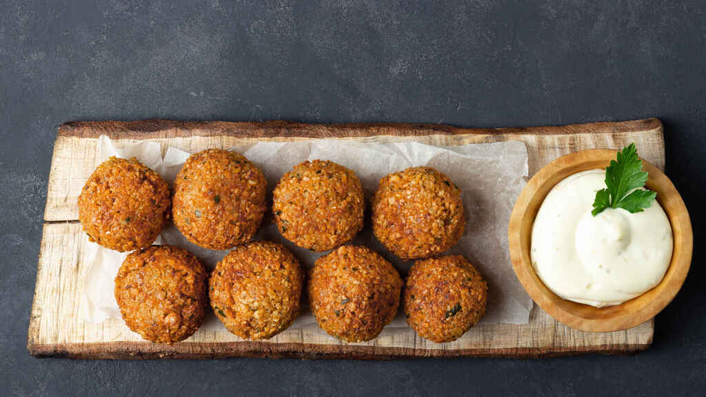

Falafel

Description
Sure, you can make falafel from a mix but frankly, it's a far cry from authentic falafel. This is the best falafel recipe I know of. You can find dried fava beans in Middle Eastern grocery stores and some supermarkets. Serve with pita bread, tahini sauce, lettuce, and other chopped vegetables.
Ingredients
- 1 cup dried fava beans
- water as needed
- 1 cup dried chickpeas
- 1 medium onion, coarsely chopped
- 2 cloves garlic, coarsely chopped
- 1 bunch flat-leaf parsley, leaves removed
- 1 pinch cayenne pepper
- 1 teaspoon ground coriander
- 3/4 teaspoon ground cumin
- 1 teaspoon baking soda
- 1 pinch salt and freshly ground black pepper
- 1/2 cup vegetable oil for frying, as needed
Directions
- Place fava beans in a bowl and cover with plenty of cold water. Soak for 2 days, changing the water daily (in hot weather change the water twice daily).
- Soak chickpeas on the second day in a separate bowl in plenty of cold water.
- Drain beans and chickpeas and rinse under cold running water; drain again. Remove the skins from the fava beans and discard them. Do not skip that step or the falafel will not taste good.
- Combine fava beans, chickpeas, onion, garlic, and parsley leaves in the bowl of a food processor; pulse until pureed, scraping the sides often to ensure everything is evenly processed to a smooth paste. Add cayenne pepper, coriander, cumin, baking soda, salt, and pepper. Transfer to a bowl; cover and let mixture rest for 30 minutes.
- Line a baking sheet or a large tray with waxed paper.
- Shape the mixture into 25 to 30 evenly sized patties and place them on the prepared baking sheet, leaving at least 1/2 inch between them. Let rest, uncovered, for 30 minutes.
- Preheat the oven to 350 degrees F (175 degrees C).
- Pour oil into the bottom of a large skillet until it just covers the bottom. Heat until oil is hot enough to sizzle a breadcrumb.
- Carefully lift the falafel from the waxed paper using a spatula. Fry a few falafel at a time and do not overcrowd the skillet. Fry until crisp and brown on the underside, 3 to 5 minutes. Flip, and fry on the other side until browned, another 3 to 5 minutes. Remove from skillet and transfer to a baking sheet. Place the finished falafel in the preheated oven to keep warm while you fry the rest, adding more oil to the pan as needed.